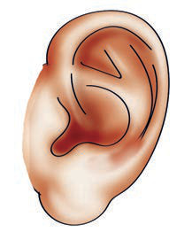

zenye uwezo wa kupokea vichocheo na kupeleka taarifa katika mfumo wa fahamu. Taarifa za vichocheo hutafsiriwa kwenye ubongo. Kielelezo namba 1 kinaonesha milango ya fahamu ambayo ni jicho, sikio, ngozi, pua na ulimi.
Jicho
Ngozi
Pua
Sikio

Ulimi
Kielelezo namba 1: Milango ya fahamu